The Kingdom of Pontos
2026-11-03 · ahowl11
Disclaimer - This Dev diary was written by @Mausolos of Mylasa our lead historian, I am simply posting it. All screens are taken by the wonderful @Lollygagging
Welcome back to another dev diary from Anatolia! Having talked about Cappadocia and shown you their units, it is now time to turn to their (even) more famous neighbours: The Kingdom of Pontos.
The region of Pontos was in antiquity considered as part of Cappadocia and thus properly called Kappadokia on the Pontos Euxeinos (= Cappadocia on the Black Sea: Strab. 12.1.4). In the Persian period, it was strongly shaped by Persian culture, and it was a Persian noble by the name of Mithridates who would found the Pontic kingdom in 281 BC. He had been involved in the Diadochi wars and eventually had to flee from Antigonos Monophtalmos (=the one-eyed) to the mountains of Paphlagonia in 302 BC, where started building his realm from the fortress of Kimiata (Plut. Demetrios 4). By 281 BC, he had vastly expanded his influence and took the title of king of Pontos (Memn. 7.2). Entertaining friendly relations with what modern historians call the Northern League (Herakleia Pontike, Kios, Byzantion, Bithynia), Mithridates and his son Ariobarzanes (r. 266-258/250 BC) were later able to recruit the Galatians to fight the Ptolemies and expand towards the coast (Apollonios of Aphrodisias, Kar. 17 (apud Steph. Byz.). After the death of Mithridates, the Galatians turned against Pontos, and when Ariobarzanes passed away as well, it was only thanks to a relief army from allied Herakleia that Pontos was saved (Memn. 16).
Grave of Mithridates I Ktistes, or one of his early successors, at Amaseia, then the capital of Pontos
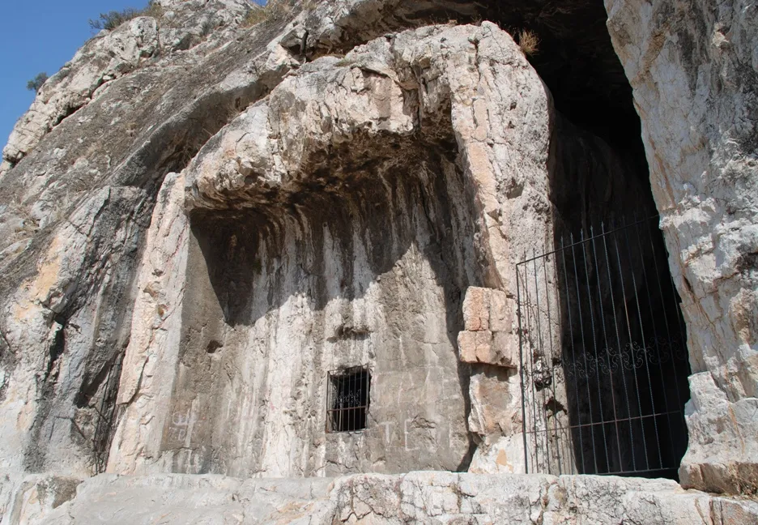
After that, Ariobarzanes' son Mithridates II came to the throne and the Pontic kingdom grew in importance. As such, it was involved in major conflicts like the Seleucid civil war between Seleukos II and Antiochos Hierax (supporting the latter from 240 BC: Phylarch. FGrHist 81 F 30) and the Fifth Syrian War (202-195 BC) in which Pontic troops backed up Kios against Bithynia and the Antigonids (Post, Bithynian Army (2022), p. 11). In the last year of his reign, 220 BC, Mithridates II tried to attack Sinope, but he was thwarted in his attempt by the Rhodians (Polyb. 4.56). It would take until 183 BC and Pharnakes I until Sinope with its giant port was conquered and made the new capital due to its favourable location (Polyb. 23.9.1-3, Strab. 12.3.11). His further expansion was checked by Cappadocia, Pergamon and Bithynia (Polyb. 24.1.13, 5.1). Yet by the middle of the 2nd century BC, Pontos was a flourishing realm and well established as a regional power in Anatolia and the Black Sea area.
Bronze phalanx pelte shield of Pharnakes II (r. ca. 185-170 BC), Getty Villa Inv. 80.AC.60. This shield helped to inspire the Pontic Chalkaspides
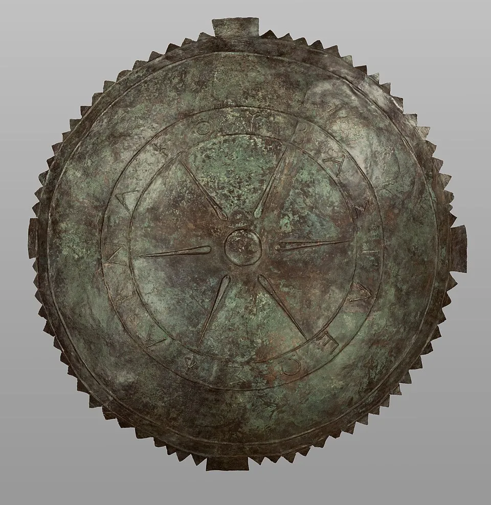
The most famous period of Pontic history was the reign of Mithridates VI. Having come to the throne in 120 BC as a 15-year old, he quickly overthew his regents, annexed Colchis and took over the Bosporan kingdom when an opportunity presented itself in 110/109 BC (IPE I² 352; IOSPE³ III 8). Paphlagonia followed in the next year when the king partitioned it between himself and Bithynia (Højte, From Kingdom to Province (2006), 15 seq.). In the 90s BC, Mithridates occupied all of Paphlagonia, attacked Bithynia directly, taking much of northern Phrygia from it, and installed a puppet ruler in Cappadocia while forcing the Pontic Pentapolis to pay tribute. Olbia, Istros and other Black Sea cities as well as some of the neighbouring Scythians also acknowledged his rule (Memn. 22, Iust. 37.3). This brutal and unprecedented expansion brought the kingdom into conflict with Rome. Roman rule in Asia Minor was deeply unpopular due to the high taxes the publicani, the tax farmers, were collecting in the areas under Roman control. Building on this hatred, Mithridates and his agents asked all the Greeks and Anatolians under Roman rule to rise up against the Romans, and in perhaps a single week in early 88 BC, up to 150 000 Italics and Romans were massacred by their Greek, Carian, Mysian and Phrygian subjects and slaves (Val. Max. 9.2.3, Memn. 22.9, Plut. Sulla 24.4).
Marble bust of Mithridates VI (r. 120-63 BC) as Herakles in the Louvre
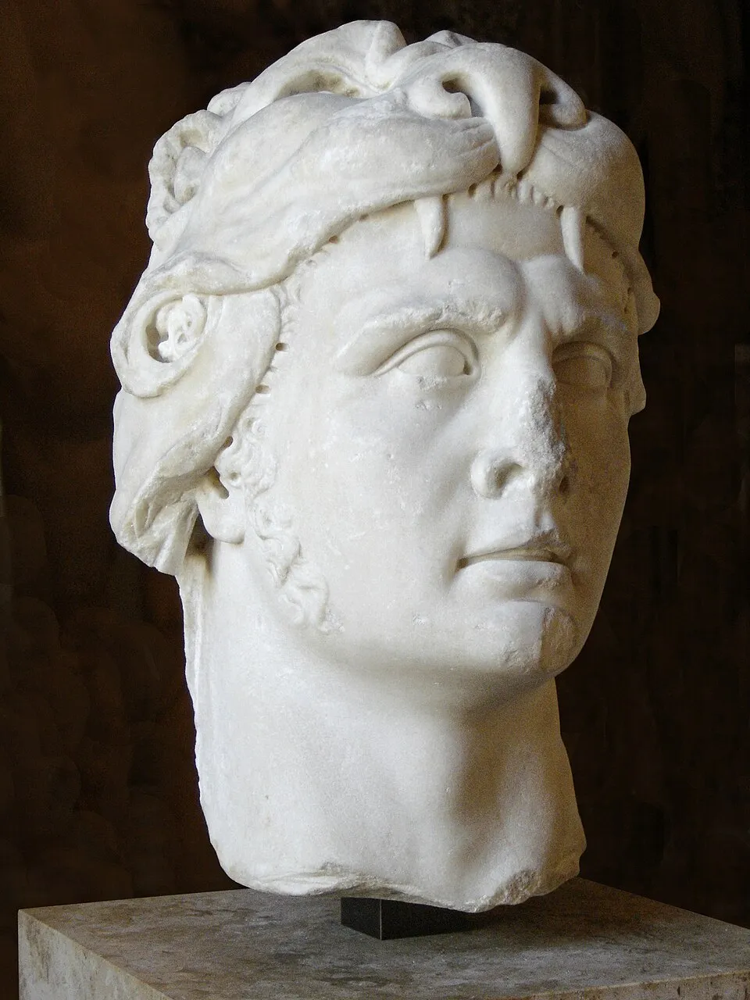
In the three Mithridatic Wars that followed, Mithridates invaded Greece, installing his supporter Athenion in Athens (Poseidonios (FGrHist 87), F 36), allied with the Roman rebel Sertorius in Iberia (Plut. Sertorius 23-24) as well as Armenia and the Cilician pirates, and recruited hundreds and thousands of men into his armies (e.g., App. Mithr. 16.108). Sulla, Lucullus and Pompey won several victories over him and his allies, but Mithridates recovered time after time and was only completely defeated when, after a defeat against Pompey in 66 BC, his own son Pharnakes had him killed to become Bosporan king as an ally of Rome in 63 BC (App. Mithr. 111). This was not the end of the Pontic kingdom, as is commonly assumed, as the Romans only annexed a western part to form the province of Pontus. The client king Polemon I (r. 37-8/7 BC) even regained the Bosporan realm, until he was killed in a rebellion by the Aspourgians, a Sarmato-Sindian group in the east of the kingdom (D.C. 54.24.4–7). His last wife, Pythodoris, ruled over Pontos, Colchis, Trapezous and Armenia Minor, while her children ascended the thrones of Thrace and Greater Armenia, and she herself married Archaelos of Cappadocia (Strab. 12.3.29; EM 9573; Campanile, Pitodoride e la sua famiglia (2010)). The monarchy was ended for good when Nero made it a province in 63/64 AD (Fisher, The Roman World (2021), p. 314).
Silver Drachm of Polemon II, the last king of Pontos, who ruled Pontos and Colchis from ca. 38-63/64 AD, and Cilicia until his death after 68 AD
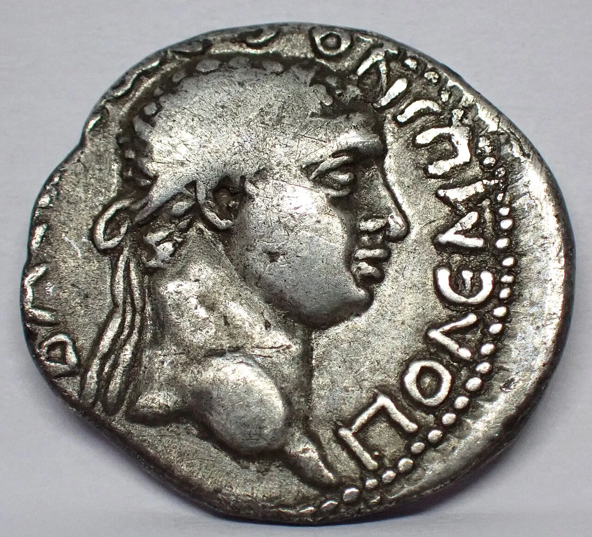
In the following, we are presenting the Pontos-specific units. Their earlier roster especially encompasses a lot of Cappadocian units, which we have already previewed in the last dev diary https://discord.com/channels/714205632663912498/894286297802362931/1566081746116677794
The scythed chariots are a terrifying weapon with a long history in the Near East and available to Pontos from the start of the campaign. They still featured in the army of Mithridates VI and their unusual appearance interested many Greek and Roman observers (Plut. Lucullus 7,4; 37, 3; Sulla 15, 1; 18, 2; 24, 1; Memnon F 27.3; Iust. 38.1).
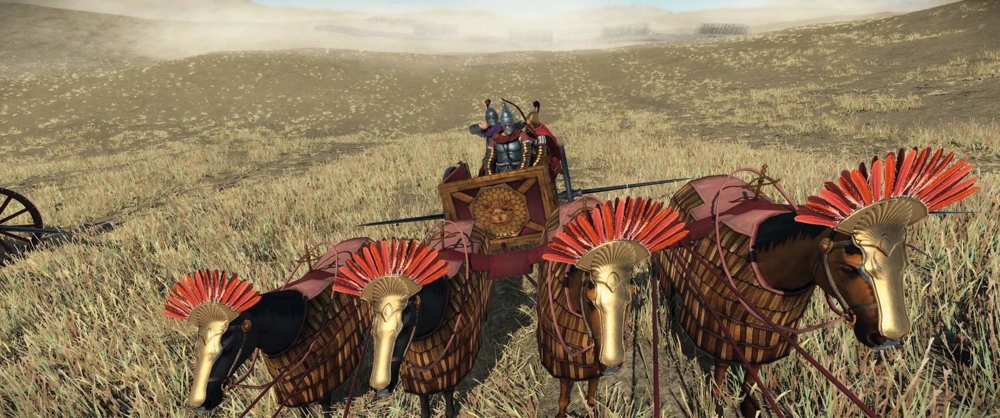
These epibatai are an early reform unit which is based on the close connections between the kings of Pontos and the Galatians in the 3rd century BC in particular. The Stele of Nikasion from Kios shows Galatian marines in the Pontic fleet in the battles around the city in 202 BC (Post, Bithynian Army (2022), p. 11).
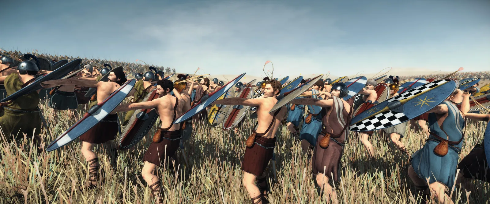
These phalangites are recruited from former slaves whom Mithridates VI freed to strengthen and enlarge his army during the wars against Rome (Plut. Sulla 18, 4-6). As they received relatively little training, they are not exactly the best phalanx unit in the game, but phalangites are always somewhat useful.
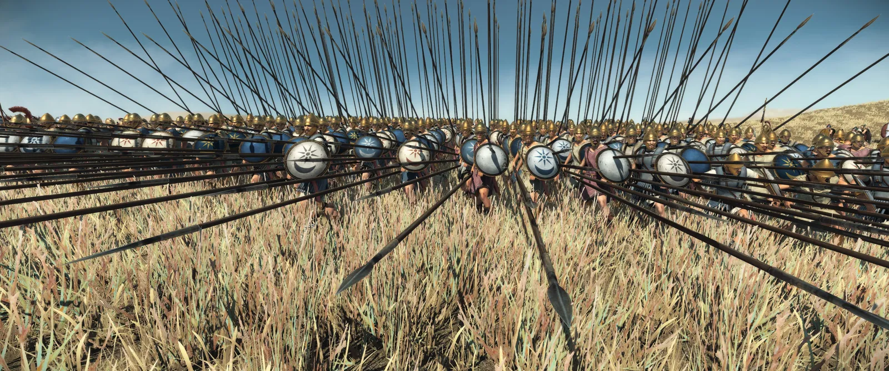
The Pontic Thorakitai are similar to such units in other Hellenistic armies such as those of the Antigonids and the Achaian League and, like the phalangites, betray the influence of the Hellenistic successor armies on Pontos and on Mithridates VI in particular.
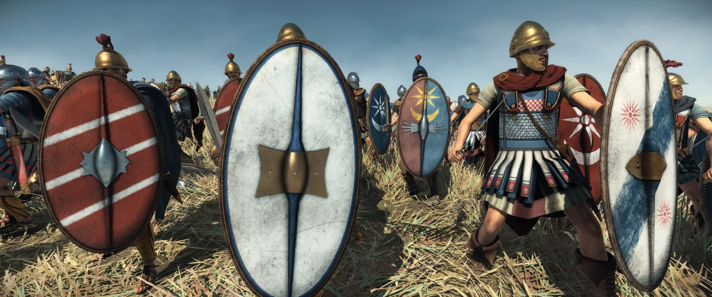
These imitation legionaries could be seen as the logical next step in the evolution of Pontic infantry after the Thorakitai, considering Mithridates was both influenced by the Macedonian kingdoms and fought Rome. According to Plutarch and Appian, the king had Roman equipment produced and trained his troops in the 'Italic' order (Plut. Lucullus 7,4: Sulla 21.4; App. Mithr. 16.108).
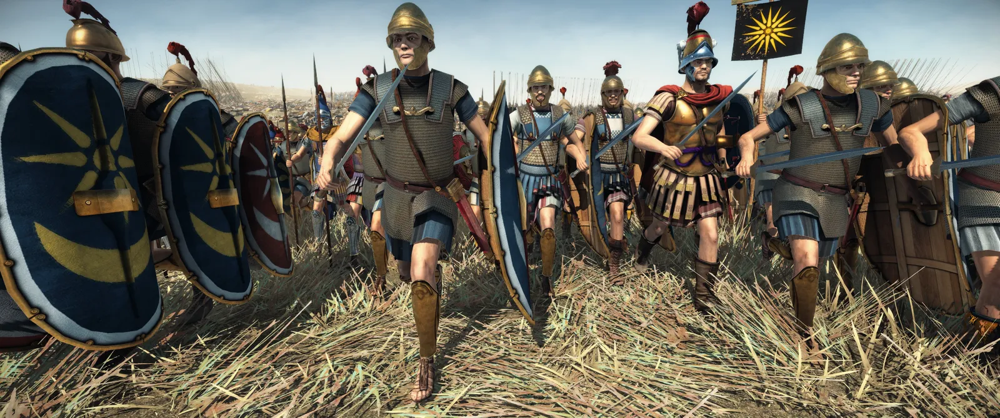
The Chalkaspides (Bronze shields) are named after the respective units in the Antigonid and Seleucid armies and similarly trained and armed (Plut. Sulla 16.7). As the shield above shows, they may have actually been introduced before the reign of Mithridates VI.
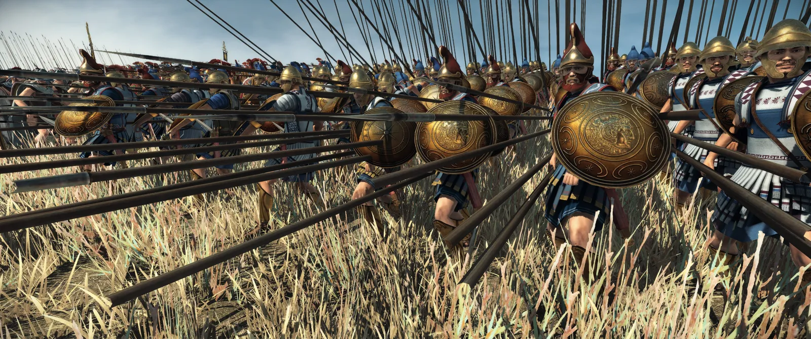
The Pontic foot guard is modelled on the Hypaspists of Alexander the Great and the Seleucids. Appian once (App. Mith. 101.463) calls these men Hypaspists, and even though they are not as experienced as the original regiment, they are an elite infantry unit that can defend your kingdom with their lives.
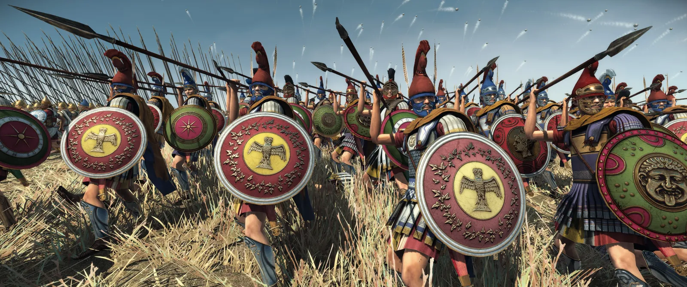
Aspidophoroi are a reform unit for Pontos as they are for many Greek factions. This dual-purpose heavy cavalry is attested across Anatolia and will therefore also have formed part of the army of the Mithridatids.
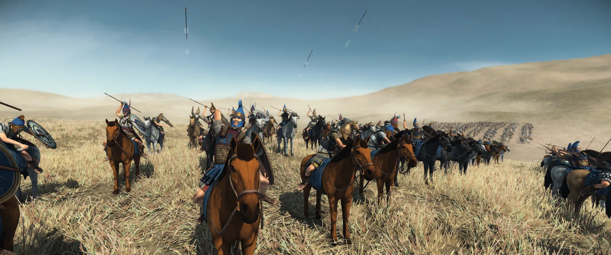
Pontic Hetairoi are, once again, a copy of a famous Macedonian military formation. According to Appian, Mithridates VI was once wounded in the thigh in battle, suggesting he did not fight as a cataphract, but rather as a Hellenistic style lancer (App. Mithr. 13.89).
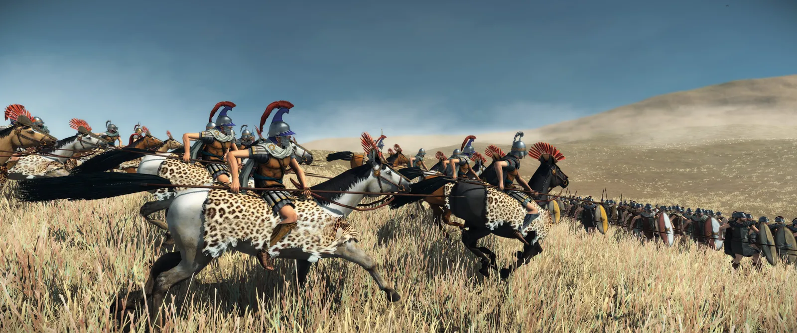
The late general's bodyguard unit is therefore very similar, but also uses javelins before charging since Mithridates VI is said to have been an excellent javelin thrower (Iust. 37.2, App. Mithr. 16.112).
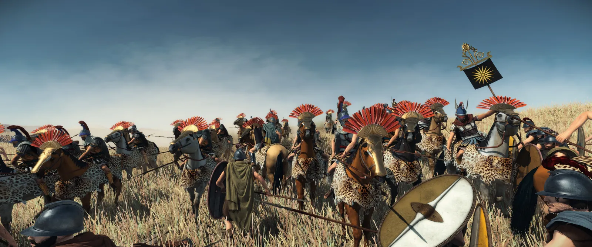
Some action shots of Pontus fighting Bithynia!
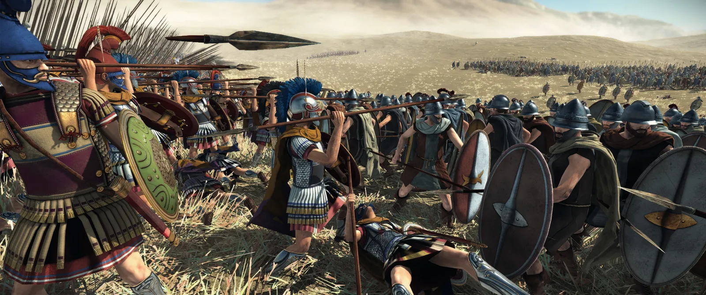
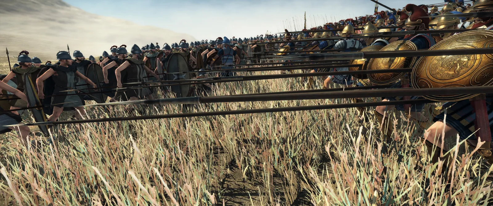
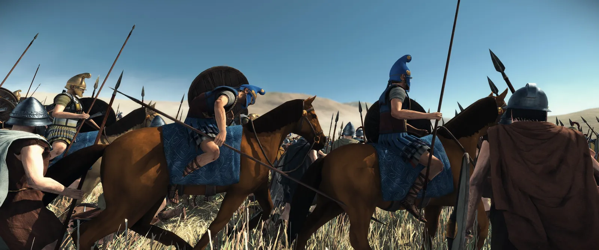

If you want an ever closer look at the units, their history and stats, @Red Zed and me made a video about their and Cappadocias' roster 🙂
This concludes our Developer Diary for today! (Start here: https://discord.com/channels/714205632663912498/894286297802362931/1567185451314577589) Discuss your thoughts and questions in a channel and see you next time!